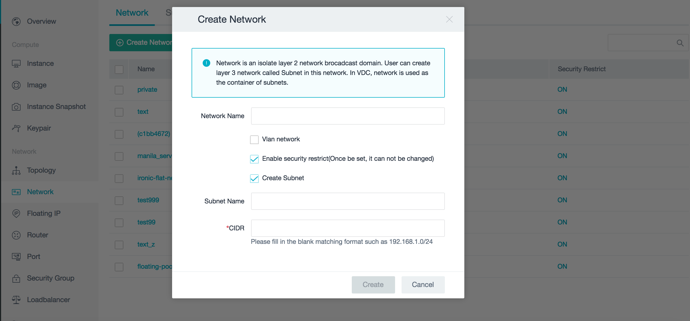

弹窗配置
弹窗是点击面板的按钮之后弹出的交互界面。一般分为默认弹窗的和自定义的弹窗，自定义的弹窗样式可以直接写入样式，在这里介绍默认弹窗为用config文件写出的界面，不需要额外写样式，以下是一个弹窗示例。

视图部分的配置文件以kunkka/halo/client/dashboard/modules/network/pop/create_network/config.json文件举例。
{
"title": ["create", "prv_network"], //弹窗的title，自动拼接i18n
"fields": [{
"type": "tip", //提示提示框类型的组件
"tip_type": "info", //tip_type
"field": "prv_info" //该组件label的i18n，也是该组件的ref名称
}, {
"type": "input", //input类型的组件
"field": "network_name",
"is_long_label": true //是否长label类型
}, {
"type": "checkbox", //checkbox类型的组件
"field": "enable_vlan",
"checked": false, //默认初始状态是否选中
"has_long_label": true
},{
"type": "input",
"field": "vlan_id",
"is_long_label": true,
"hide": true,
"tip_info": "vlan_tip"
}, {
"type": "checkbox",
"field": "enable_security",
"checked": true,
"has_long_label": true
}, {
"type": "checkbox",
"field": "create_subnet",
"checked": true,
"has_long_label": true
}, {
"type": "input",
"field": "subnet_name",
"is_long_label": true
}, {
"type": "input",
"field": "net_address",
"is_long_label": true,
"tip_info": "cidr_tip", //带有提示文字的input文字框
"required": true //是否为必填项，如果是且没有内容，则点击确认按钮会报错
}],
"btn": {
"value": "create", //确认按钮的i18n文字
"type": "create", //button的type，有create，delete，warning，cancel
"disabled": true //默认初始状态是否禁用
}
}
逻辑部分的代码以kunkka/halo/client/dashboard/modules/network/pop/create_network/index.js文件举例。
var commonModal = require('client/components/modal_common/index');
var config = require('./config.json');
var request = require('../../request');
var __ = require('locale/client/dashboard.lang.json');
function pop(parent, callback) { //parent为父级弹窗，callback回调函数需要在confirm之后执行
if (!HALO.settings.is_show_vlan) { //根据情况判断vlan_id组件是否隐藏
config.fields[2].hide = true;
}
var props = {
__: __, //i18n对象
parent: parent, //父级弹窗，若没有可以写null
config: config, //等同于上面的config.json
onInitialize: function(refs) {}, //初始化时需要的逻辑写入onInitialize函数，refs为config中所有组件的引用组合
onConfirm: function(refs, cb) { //在点击确认按钮之后的逻辑
var data = { //点击onConfirm之后确认按钮会变成disabled状态，并且执行该函数的代码
name: refs.network_name.state.value
};
/*
省略代码
*/
request.createNetwork(data).then((res) => {
callback && callback(res.network);
cb(true); //onConfirm有cb参数：当传递true时关闭弹窗；若传递false，确认按钮变成非disabled状态，可以重新点击
});
},
onAction: function(field, status, refs) { //field为当前发生变化的组件名称，status为当前发生变化的组件的value，refs为所有组件的引用组合
var subnetChecked = refs.create_subnet.state.checked;
switch (field) {
case 'create_subnet': //以下代码为当create_subnet组件值发生变化时其他组件的视图如何变化
refs.subnet_name.setState({
hide: !subnetChecked
});
refs.net_address.setState({
hide: !subnetChecked
});
refs.btn.setState({
disabled: subnetChecked
});
break;
/*
省略代码
*/
default:
break;
}
}
};
commonModal(props); //把参数传给commonModal执行
}
module.exports = pop;
更多组件和属性可以在kunkka/halo/client/components/modal_common/subs中查看。